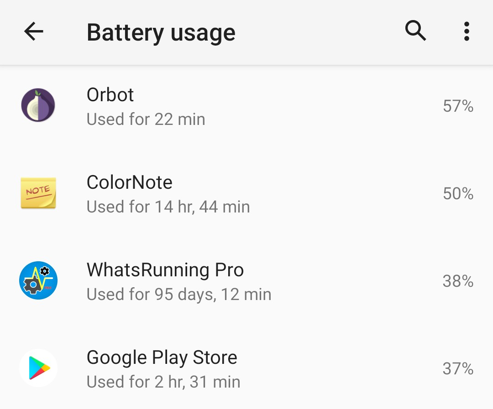
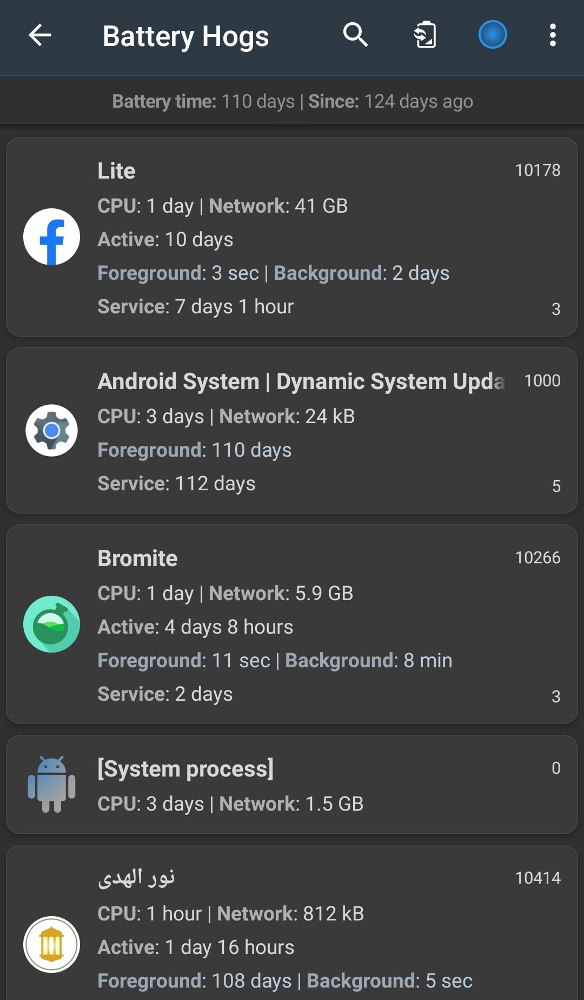

Which Android apps are draining battery?
Battery life is greatly affected by hardware resources like Display, Camera, Sound, Flashlight, WiFi, Bluetooth, Phone etc. But we are usually aware of these consumers as we control them. What we do not control is sometimes an app or some other process which keeps on running in background without our knowledge and wastes battery.
Battery usage in device Settings gives a basic hint about apps' battery usage:
WhatsRunning gives a detailed breakdown of how apps have affected the battery life over past few days or weeks or months:
Details include:
- Active time: You have used the app.
- Foreground time: The app has been running with high priority e.g. as a Foreground Service or a Content Provider.
- Background time: The app has been running with low priority e.g. as a Background Service.
- Services time: The app has been running as a Foreground or Background Service.
- CPU usage
- Network usage
Details of services can also be seen from menu -> Show services. Also the list can be sorted by all above parameters.
The above list shows only the apps which have been running longer than the others on battery. But what if there is a non-app process consuming high battery? You can enable Process Watcher for a day or so and then view the total life and average CPU usage of all processes including apps.
Related: